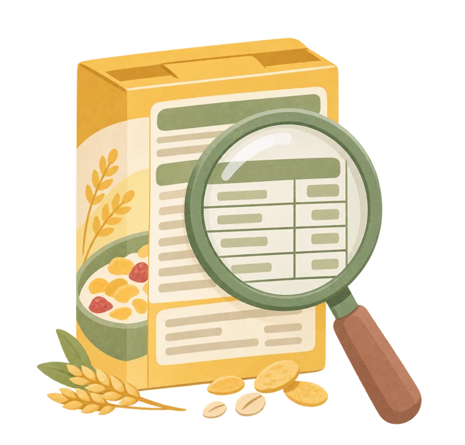

🔍 食品判讀力｜第 2 關
這個東西，
這個東西，
我該怎麼選？
包裝看起來很健康，就一定比較適合你嗎？
今天，你要當一名「食品偵探」。
教師提問：「你買包裝食品時，最常先看哪裡？」

STEP 1｜第一眼選擇
🥣 明天早餐，你會選哪一包？
先只看包裝正面。沒有標準答案，照你的第一直覺選。
SUNNY MORNING
活力水果脆片
🌿 天然穀物🍓 水果好營養⚡ 元氣早餐
示意商品
PLAIN OATS
原味燕麥片
原味燕麥簡單包裝
示意商品
你剛才主要根據什麼選？
教師提醒：這一頁刻意只給正面資訊，讓學生先看見自己的「第一眼判斷」。
STEP 2｜包裝裡藏了哪些線索？
📦 別只看正面
點開每個位置，看看食品包裝真正能提供你哪些資訊。
🔎 點一個位置開始調查。
🔍 偵探小練習：翻到背面看成分
A｜活力水果脆片穀物粉、砂糖、植物油、草莓乾（3%）、葡萄糖漿、食鹽、香料
B｜原味燕麥片燕麥
A 的成分裡，用量第二多的是什麼？
教師提問：「如果你想知道這包食品『到底用了什麼做成』，應該找哪一欄？」
STEP 3｜營養標示會說話
🔢 「每份」不等於「整包」
營養標示
每一份量
40 公克
本包裝含
2 份
項目
每份
每100公克
熱量
180 kcal
450 kcal
蛋白質
4 g
10 g
脂肪
6 g
15 g
飽和脂肪
2.5 g
6.3 g
反式脂肪
0 g
0 g
碳水化合物
27.5 g
68.8 g
糖
12 g
30 g
鈉
160 mg
400 mg
如果把整包吃完，共吃進多少熱量？
教學重點：先看「本包裝含幾份」，再判斷整包實際攝取量。可補充：國民健康署建議每日添加糖攝取不超過總熱量 10%，以一天 2000 大卡為例約 50 公克。
STEP 4｜現在多了真正的資料
⚔️ 早餐麥片 PK
同樣是早餐食品，看到更多資訊後，你的判斷會不會改變？
| 比較項目 | A 活力水果脆片 | B 原味燕麥片 |
|---|---|---|
| 每份糖 | 18 g | 1 g |
| 每份膳食纖維 | 2 g | 5 g |
| 每份鈉 | 190 mg | 5 mg |
| 主要成分示意 | 穀物、糖、油、水果乾 | 燕麥 |
現在，你會選哪一個當「平常早餐的一部分」？
先做一次選擇，等等會比較你「第一眼」和「看完資訊」之後的判斷。
教師提醒：不把這題簡化成「A壞、B好」，而是強調用途、頻率、份量與需求。
STEP 5｜食品偵探挑戰
🕵️ 不同情境，判斷角度也不同
每題都先看「這個人現在需要什麼」，再決定要比較哪些線索。
教師提問：「如果情境換了，原本的答案還一定一樣嗎？」
🏅
完成｜食品判讀力已探索
你已經不只看包裝正面了
真正的食品判讀，不是找到一個「永遠最健康」的商品，而是學會找資訊、做比較，再回到自己的需求。
食品偵探五步驟
① 看份量｜先確認「一份」是多少、本包裝有幾份
② 看熱量與營養素｜不要只盯著一個數字
③ 看糖、鈉、脂肪等資訊｜依自己的需求比較
④ 看成分｜了解食品主要由什麼組成
⑤ 回到自己的需求｜我現在為什麼要吃它？
下次走進便利商店，試著做一件小事：
把想買的食品翻到背面，看一次「每份量」和營養標示。
收尾提問：「今天哪一個線索最可能改變你下次買東西的方式？」